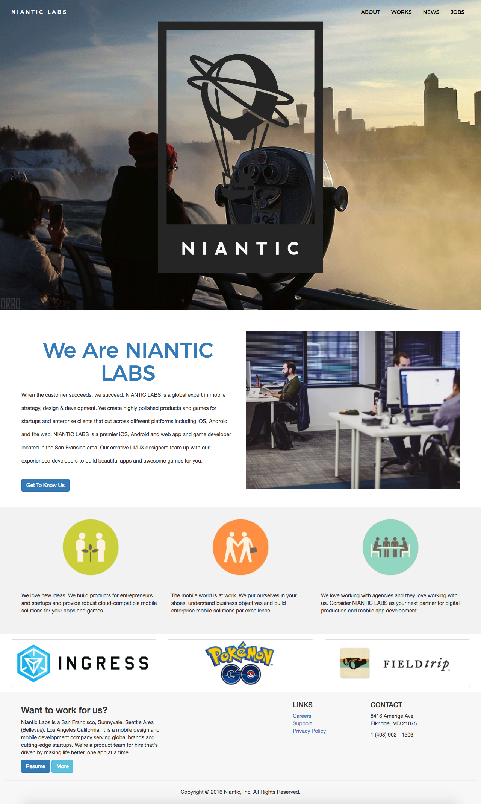
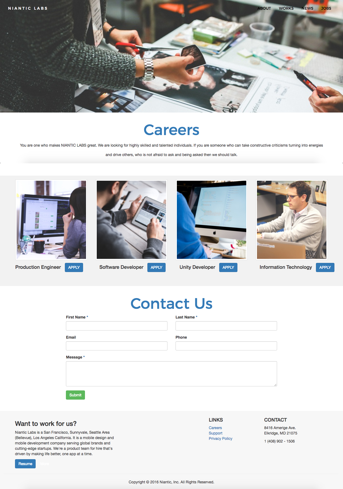
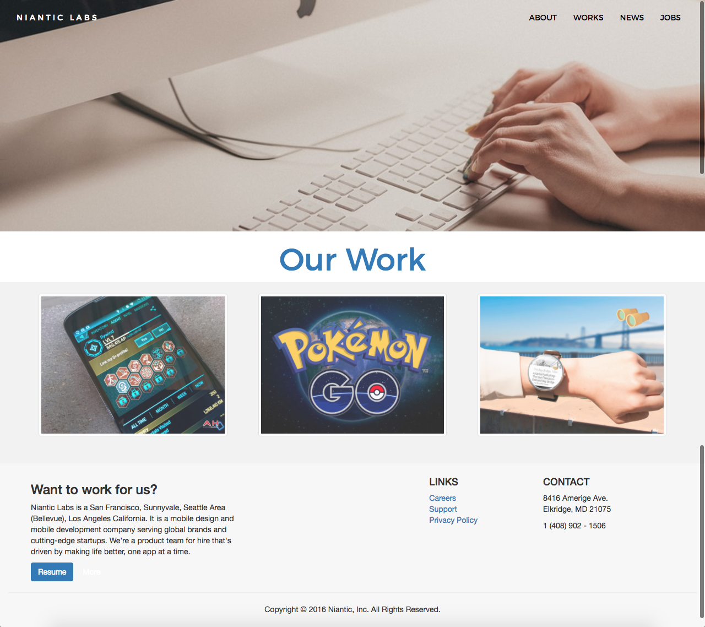
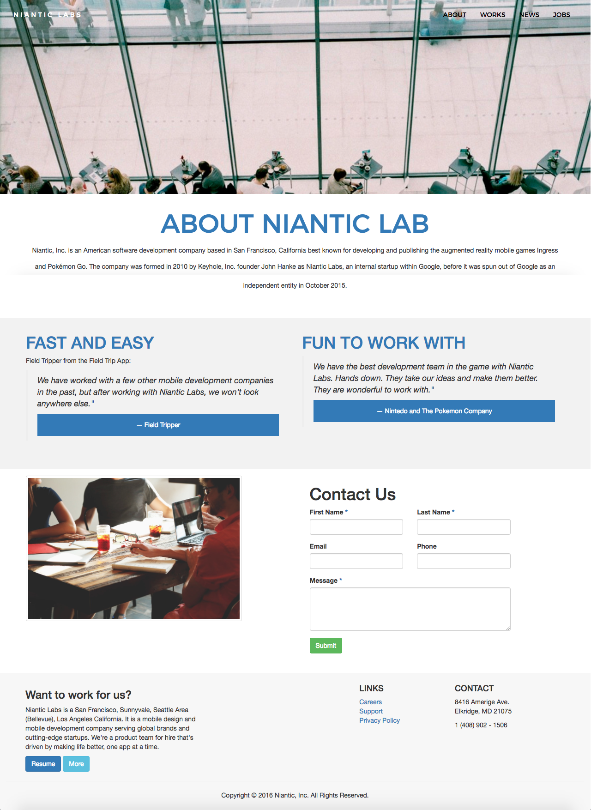

"Niantic is building an AR + Real World game platform that is defining state of the art with an innovative server architecture that enables truly massive scale supporting a global shared state rich interactions for hundreds of millions of users at unprecedented throughput and a client platform that sets the standard for mapping, security, and AR capabilities."

In this project, I was given an assignment to find a website to redesign. Pokemon Go was recently released, so I wanted to honor them by redesigning their old website.


